Watch and island,
finished and stress-tested
Real Apple Watch and iPhone, release build 1.0.12 (46) from main, live web lane. Three full workouts finished on the wrist, every sync direction timed, every Dynamic Island button pressed with the phone in the background. Two bugs found and fixed live. Apple Watch widgets added. Shipping as 1.0.13.
sets synced in the foreground pass, reps exact both ways
watch tick to phone (1.6–2.1 s, includes the read itself)
phone tick to watch, typed reps carried over
island buttons worked from the home screen: Log set, +15 s, Skip rest
watch-finished workouts saved on the server with every set and the RPE
bugs found on device, both fixed and live
7 October 2026 · Jordan Demo test client · iPhone 14 Pro (iOS 27) + Apple Watch Series 8 (watchOS 26.6)
Important: what clients have right now
App Store 1.0.12 (build 47), live since yesterday, was cut by the Apple Health work from an older branch. It has the health features but not the full-height watch layout, the island buttons or the locked-phone sync fixes. Clients have the 4 October watch app. 1.0.13 is built from main, which has all of it plus the health work and the new widgets.
On your wrist
Starting a workout on the phone opened it on the watch by itself. The watch uses the whole screen, heart rate shows beside "N of M", and a folded rest timer sits in the clock band.
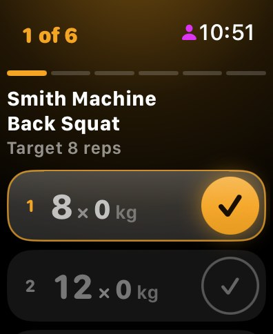
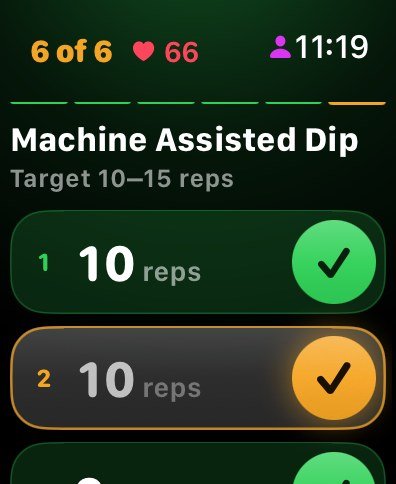
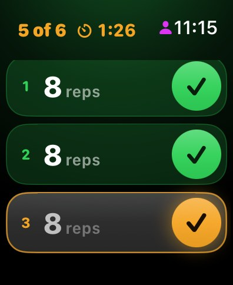
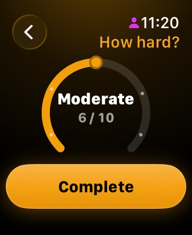
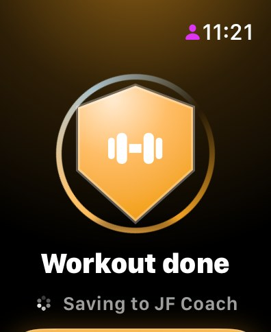
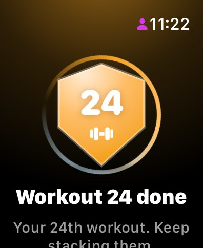
Sync, timed
Each figure is from the tap to the other device's first read, so it includes about 1.5 s for the read itself. Every value matched, including reps typed on one device and shown on the other.
| Direction | Exercise | Sets | Seen after |
|---|---|---|---|
| Watch → phone | Smith Machine Back Squat | 1, 2, 3 | 2.1 · 2.0 · 1.9 s |
| Watch → phone | Machine Seated Chest Press | 1, 2, 3 | 2.0 · 1.8 · 1.6 s |
| Phone → watch | Smith Machine Bent Over Row (9, 10, 11 reps) | 1, 2, 3 | ≤15.7* · 2.9 · 3.7 s |
| Phone → watch | Machine Seated Shoulder Press (9, 10, 11 reps) | 1, 2, 3 | 2.2 · 2.7 · 3.1 s |
| Phone → watch | Workout start (Full Body 2) | – | 3.9 s |
*The first read on a dimmed watch is slow; the set was already there on that first read. Two misses during the run were my test harness tapping behind an overlay, not sync: both devices agreed each time.
The island, with the phone in the background
Pressed from the home screen, with JF Coach not in front. Each press reached the watch, and the island followed every watch tick.
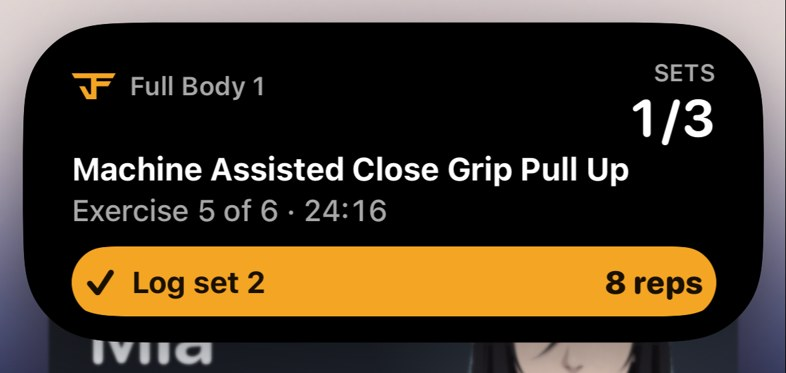
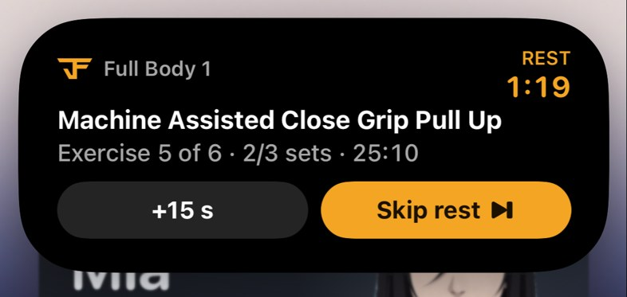
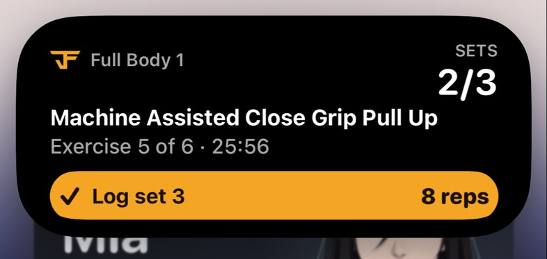
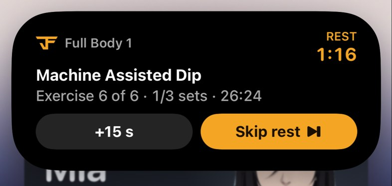
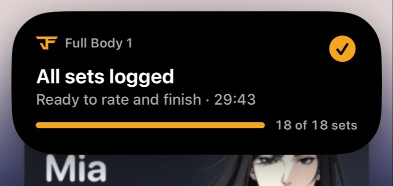
Finishing on the wrist
Three workouts finished on the watch with the phone in the background. All three are on the server as completed, with the same reps and RPE as the watch.
| Workout | Finished on watch | On the server | What happened |
|---|---|---|---|
| Full Body 1 (18 sets) | 11:21 | 11:21:55 | Saved with JF Coach never opened; RPE 7, every set exact |
| Full Body 2 | 11:37:43 | 11:38:45 | Saved in the background; the watch's "finishes when your iPhone picks it up" note cleared by itself |
| Full Body 3 | 11:48:33 | 11:52:50 | iOS gave the phone no background time this run, so it waited in the phone's queue and saved the moment JF Coach opened. Designed fallback, nothing lost |
Two bugs found, fixed and live
Training didn't show a watch-finished workout
Home updated, but the kept-alive Training tab still said 3 of 4 and offered Start It Early until the app restarted. Training now refreshes like Home does. Verified on the phone: 5 of 6 straight away.
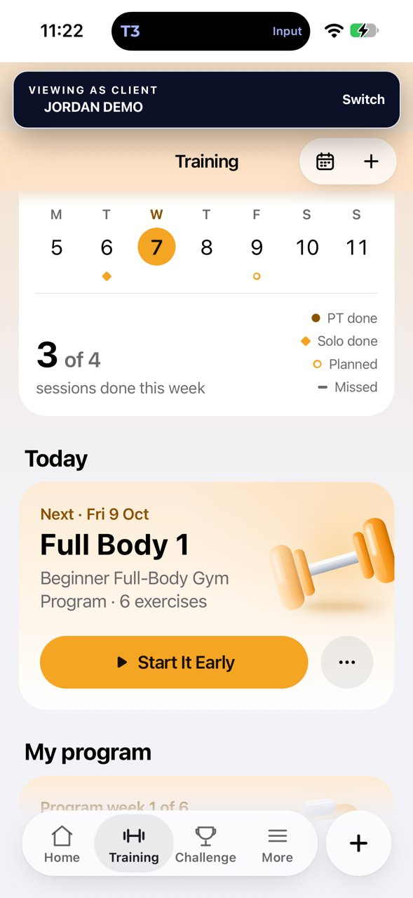
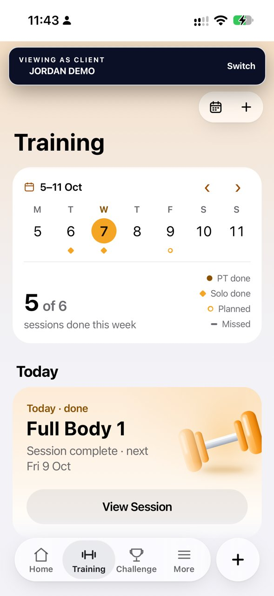
Empty "Session" page after a watch finish
The jump to the celebration was issued while the phone was hidden and got lost, so JF Coach opened on "Start a workout to log it here". It now opens the celebration on return, or "Full Body 3 is saved. Nice work." when the save waited for the app.
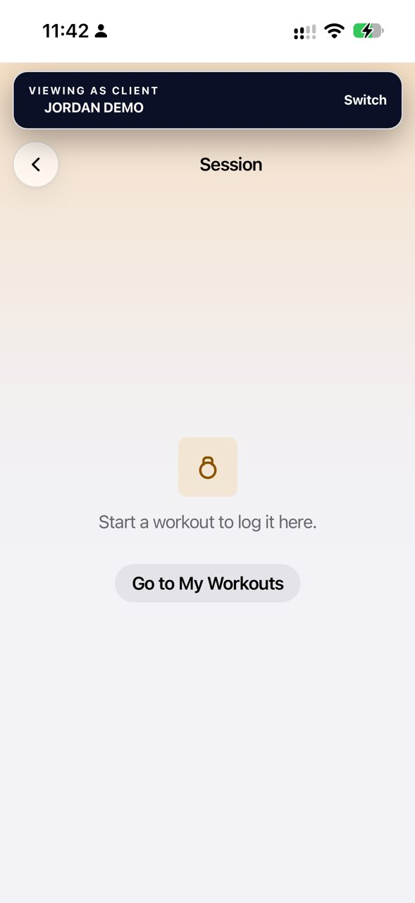
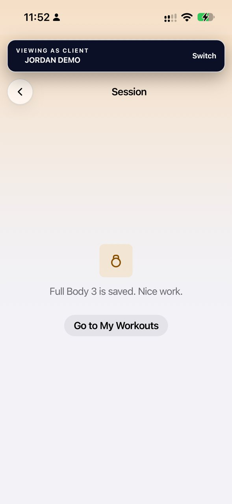
New: JF Coach on the watch face
Complications for every watch face (circle, corner, inline, rectangle) and a Smart Stack card that rises to the top during a workout. The rest countdown ticks by itself.
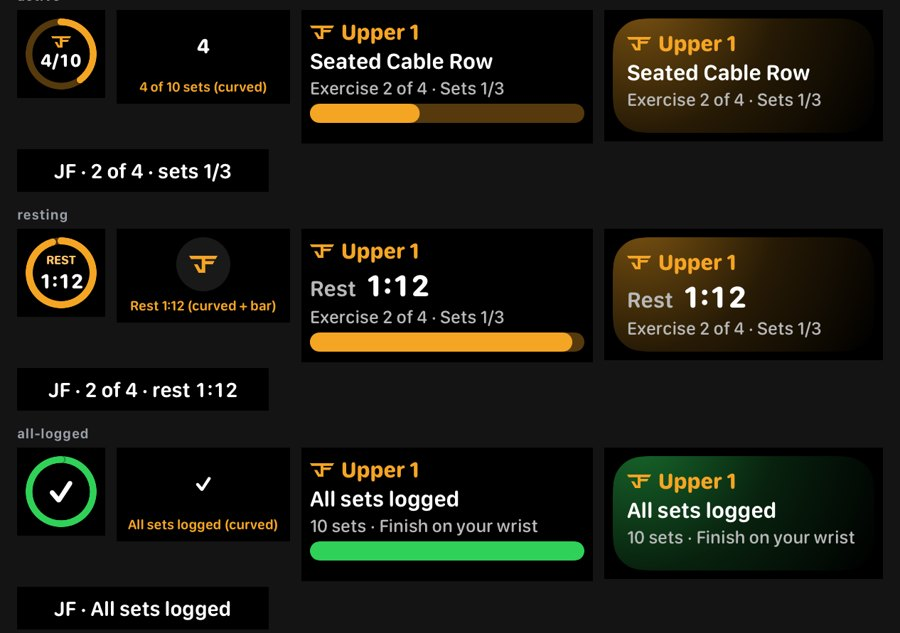
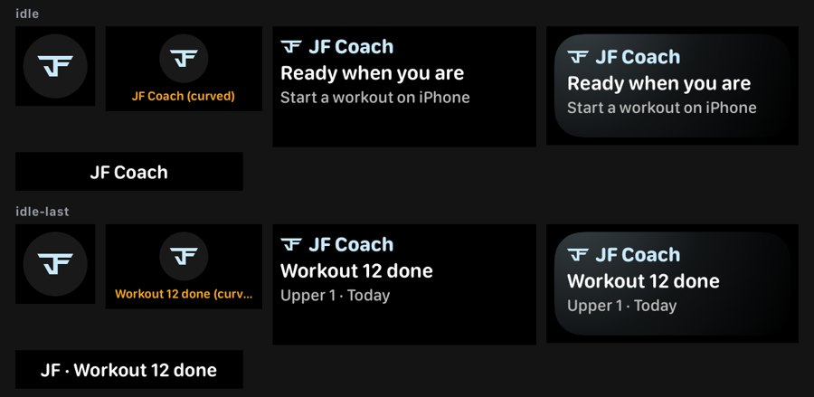
What's live
- ✓
Web lane NIF0STEQ
Both fixes are live for every client now (no app update needed). Rollback: e4WJwkeA.
- →
JF Coach 1.0.13 from main
The full-height watch, island buttons, locked-phone sync fixes, an hour-idle hold, the widgets and the health work. TestFlight first, then App Store review.
- i
Wear OS
Built and signed with the same features (4 Oct); it still needs uploading to Google Play's Wear track.